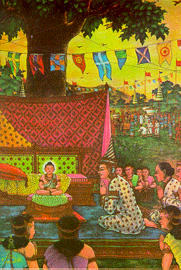
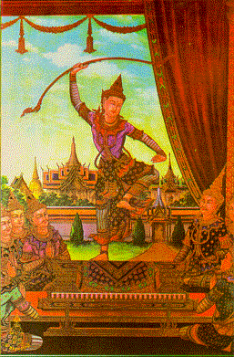

BuddhaSasana Home Page
This document is written in Vietnamese, with
Unicode Times font
| 05 | 06 |
|  |  |
| During ploughing ceremony, Prince
Siddhattha sat down in the shade of a tree and was soon lost in meditation. Though the
shadows of all the trees had lengthened, the shadow of the tree under which the prince was
seated had not moved. His father was overjoyed and bowed before him again. Trong buổi lễ Hạ điền, Hoàng tử Sĩ-đạt-ta ngồi dưới một cụm cây to bóng mát và hành thiền. Mặc dù các bóng cây khác dần dần ngã dài ra theo thời gian trong ngày, bóng cây nơi Ngài ngồi thiền vẫn giữ yên như cũ. Vua cha rất vui mừng, và một lẫn nữa cúi đầu lễ Ngài. |
Prince Siddhatha showed his skill
in archery by lifting a bow which no one within memory of man had ever been able to draw
or lift it. It was known from his marvellous strength that he would become Universal
Monarch. Thái tử Hoàng tử Sĩ-đạt-ta có tài thiện xảo bắn cung, và đã nâng cánh cung rất nặng mà từ trước đến nay có rất ít người nâng và dùng nó. Việc hiển thị sức mạnh phi thường nầy chứng tỏ Ngài sẽ là Ðế Vương Vũ trụ. |
[Mục Lục][01-02][03-04][05-06][07-08][09-10][11-12][13-14]
[15-16][17-18][19-20][21-22][23-24][25-26]][27-28][29-30][31-32]
Source: Post Cards from S. Dhumphakdi & Sons Publisher, Bangkok, Thailand